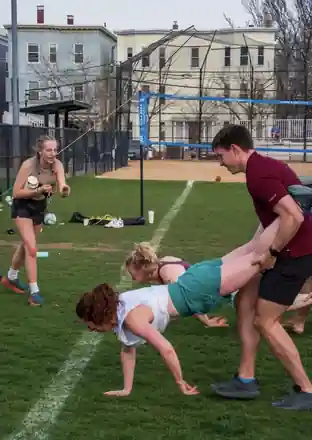
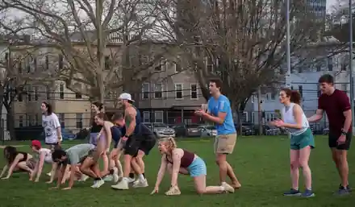
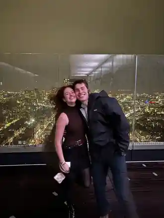
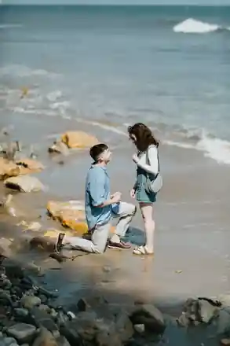

01 · About us
How We Got
Here
The longer version belongs in photographs, half-remembered details, old notes, and stories that get better every time we tell them. We're starting with one chapter at a time, letting each little cluster find its own rhythm.
Field Day
A field full of friends, a volleyball net, a wheelbarrow race, and the point where they got to know each other a bit better.



Boston
James was finishing grad school before returning to the Air Force. Samantha was navigating a consulting career change. The timing was not especially convenient, yet Boston kept giving them another afternoon, another walk, and another reason to stay a little longer.



CHAPTER 03
Long Distance
Then the map got bigger. Samantha headed to Scotland; James headed to California. There were time zones, flights, calls squeezed between work, and a growing collection of places that mattered mostly because the other person was eventually going to be there.
It was not the easiest arrangement, but it made one thing unusually clear: neither of them was interested in building a life that did not include the other.


CHAPTER 04
The Big Weekend
In Santa Barbara, James brought Samantha to the coast and asked the question that made the rest of the weekend feel slightly unreal. She said yes.
Then came dinner — and the second surprise. Their siblings were waiting to celebrate with them, turning the proposal into one of those weekends that kept getting better every few hours.
